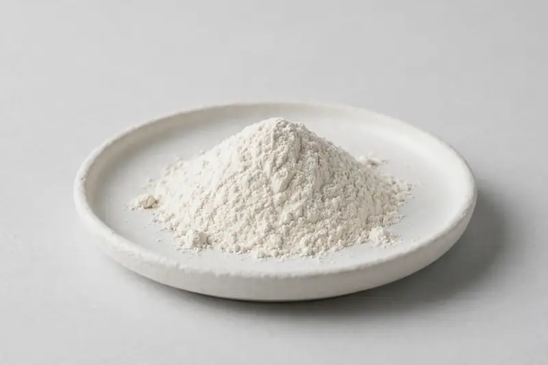

Inulin — chicory-root-derived powder at 90%+ for prebiotic-fiber and gut-comfort formulations.

Overview
Inulin is a fructan extracted from chicory root (Cichorium intybus) and traded as a white powder, commonly at 90%+ inulin content, in native and short-chain forms. It is a staple in prebiotic-fiber and gut-comfort product concepts. As a Xi'an-based trading company sourcing through vetted partner producers, we work from the buyer's target inulin content and chain profile and confirm feasibility honestly.
Specifications below reflect commonly requested options in the market — not a stock list. Share your target spec and we'll confirm exactly what we can supply, honestly.
| Specification | Details |
|---|---|
| Botanical identity | Chicory-root-derived inulin powder |
| Marker compound | Inulin — commonly requested: 90%+ content, native and short-chain (oligofructose-enriched) forms |
| Appearance | Fine powder, color typical of the extract |
| Mesh size | Typically 80–100 mesh (confirm per inquiry) |
| Testing | COA/TDS arranged on request; scope agreed per your spec |
Applications
Documentation
We don't claim in-house labs or certifications we don't hold. COA and TDS documents can be arranged on request, and testing scope is agreed against your specification before supply.
FAQ
Related products
Eurycoma longifolia
Key marker: Eurycomanone
View specs →Chondrus crispus
Key marker: Minerals / Iodine
View specs →Sambucus nigra
Key marker: Anthocyanins
View specs →Humulus lupulus
Key marker: Xanthohumol & flavonoids
View specs →Pearl powder (Hyriopsis cumingii)
Key marker: Fine cosmetic grades
View specs →Send your target spec and volumes — we'll respond with a tailored quotation.
Request a Quote